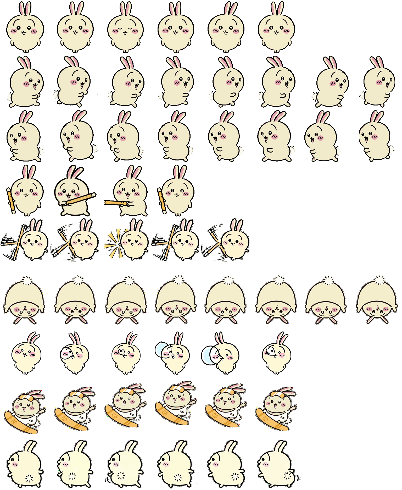

macOS / Linux
curl -fsSL "https://raw.githubusercontent.com/wishflow/wishflow-tools/master/apps/pet/install.sh" | shLinux 仅保证文件安装。CLI 显示依赖支持 Kitty 图形协议或 Sixel 的终端；不承诺桌面浮动宠物功能。
UU-USAGI · LOCAL PET PACKAGE
备份自本机现有安装的动画兔子宠物包。安装器只复制文件，不会替你切换当前宠物。

非原创，仅供非商业备份和分享。素材来自用户本机已有安装；原作者和原始许可目前无法追溯。本声明只描述本备份用途，不代表原作者授权，也不代替正式许可。
INSTALL
运行对应命令后，安装器会校验文件，再复制到你的 Codex 宠物目录。
curl -fsSL "https://raw.githubusercontent.com/wishflow/wishflow-tools/master/apps/pet/install.sh" | shLinux 仅保证文件安装。CLI 显示依赖支持 Kitty 图形协议或 Sixel 的终端；不承诺桌面浮动宠物功能。
irm "https://raw.githubusercontent.com/wishflow/wishflow-tools/master/apps/pet/install.ps1" | iex无需管理员权限。PowerShell 会在输出中显示安装路径和后续操作。
AFTER INSTALL
/pets uu-usagi 选择。桌面端宠物保存在本机，不会自动同步到网页。Linux CLI 的显示能力取决于终端图形协议；tmux、Zellij 等环境可能无法显示。
REMOVE
退出正在使用宠物的界面后，只删除本包目录。使用自定义 CODEX_HOME 时，请先确认变量值。
rm -r "${CODEX_HOME:-$HOME/.codex}/pets/uu-usagi"